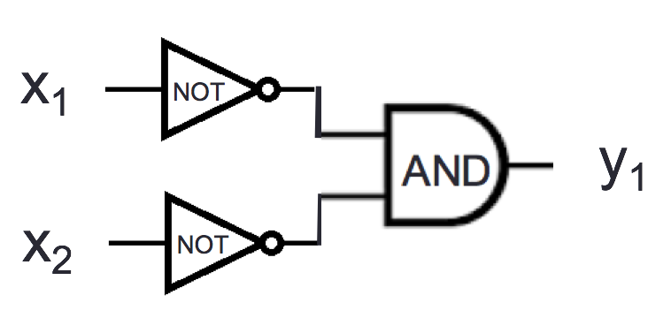
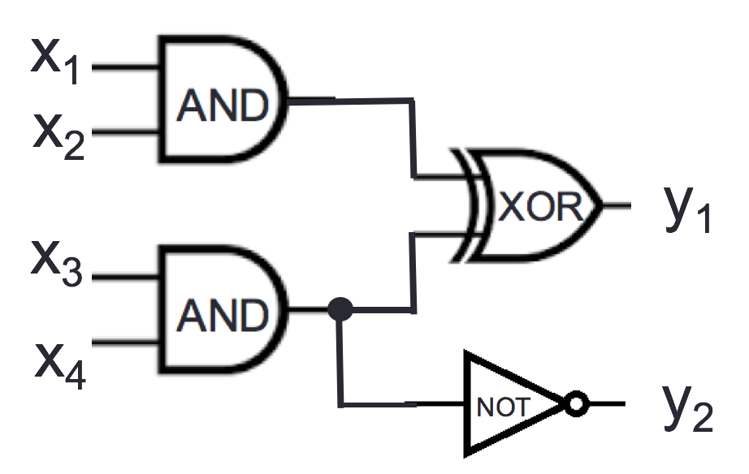

Find and fix any and all mistakes with the following:
\((1)_2 = (1)_8\)
\((142)_{10} = (142)_{16}\)
\((20)_{10} = (10100)_2\)
\((35)_8 = (1D)_{16}\)
Recall the definition of base expansion we discussed:
Definition For \(b\) an integer greater than \(1\) and \(n\) a positive integer, the base \(b\) expansion of \(n\) is \[(a_{k-1} \cdots a_1 a_0)_b\] where \(k\) is a positive integer, \(a_0, a_1, \ldots, a_{k-1}\) are nonnegative integers less than \(b\), \(a_{k-1} \neq 0\), and \[n = \sum_{i=0}^{k-1} a_{i} b^{i}\]
Notice: The base \(b\) expansion of a positive integer \(n\) is a string over the alphabet \(\{x \in \mathbb{N} \mid x < b\}\) whose leftmost character is nonzero.
| Base \(b\) | Collection of possible coefficients in base \(b\) expansion of a positive integer |
|---|---|
| Binary (\(b=2\)) | \(\{0,1\}\) |
| Ternary (\(b=3\)) | \(\{0,1, 2\}\) |
| Octal (\(b=8\)) | \(\{0,1, 2, 3, 4, 5, 6, 7\}\) |
| Decimal (\(b=10\)) | \(\{0,1, 2, 3, 4, 5, 6, 7, 8, 9\}\) |
| Hexadecimal (\(b=16\)) | \(\{0,1, 2, 3, 4, 5, 6, 7, 8, 9, A, B, C, D, E, F\}\) |
| letter coefficient symbols represent numerical values \((A)_{16} = (10)_{10}\) | |
| \((B)_{16} = (11)_{10} ~~(C)_{16} = (12)_{10} ~~ (D)_{16} = (13)_{10} ~~ (E)_{16} = (14)_{10} ~~ (F)_{16} = (15)_{10}\) |
We write an algorithm for converting from base \(b_1\) expansion to base \(b_2\) expansion:
Definition For \(b\) an integer greater than \(1\), \(w\) a positive integer, and \(n\) a nonnegative integer \(\underline{\phantom{\hspace{1in}}}\), the base \(b\) fixed-width \(w\) expansion of \(n\) is \[(a_{w-1} \cdots a_1 a_0)_{b,w}\] where \(a_0, a_1, \ldots, a_{w-1}\) are nonnegative integers less than \(b\) and \[n = \sum_{i=0}^{w-1} a_{i} b^{i}\]
| Decimal | Binary | Binary fixed-width \(10\) | Binary fixed-width \(7\) | Binary fixed-width \(4\) |
| \(b=10\) | \(b=2\) | \(b=2\), \(w = 10\) | \(b=2\), \(w = 7\) | \(b=2\), \(w = 4\) |
| \((20)_{10}\) | ||||
| (a) | (b) | (c) | (d) |
Definition For \(b\) an integer greater than \(1\), \(w\) a positive integer, \(w'\) a positive integer, and \(x\) a real number the base \(b\) fixed-width expansion of \(x\) with integer part width \(w\) and fractional part width \(w'\) is \((a_{w-1} \cdots a_1 a_0 . c_{1} \cdots c_{w'})_{b,w,w'}\) where \(a_0, a_1, \ldots, a_{w-1}, c_1, \ldots, c_{w'}\) are nonnegative integers less than \(b\) and \[x \geq \sum_{i=0}^{w-1} a_{i} b^{i} + \sum_{j=1}^{w'} c_{j} b^{-j} \hfill \textrm{\qquad and \qquad} \hfill x < \sum_{i=0}^{w-1} a_{i} b^{i} + \sum_{j=1}^{w'} c_{j} b^{-j} + b^{-w'}\]
| \(3.75\) in fixed-width binary, | |
| integer part width \(2\), | |
| fractional part width \(8\) | |
| \(0.1\) in fixed-width binary, | |
| integer part width \(2\), | |
| fractional part width \(8\) | |
Note: Java uses floating point, not fixed width representation, but similar rounding errors appear in both.
Recall the definitions from class for number representations for base \(b\) expansion of \(n\), base \(b\) fixed-width \(w\) expansion of \(n\), and base \(b\) fixed-width expansion of \(x\) with integer part width \(w\) and fractional part width \(w'\).
For example, the base \(2\) (binary) expansion of \(4\) is \(\qquad (100)_2 \qquad\) and the base \(2\) (binary) fixed-width \(8\) expansion of \(4\) is \(\qquad (00000100)_{2,8} \qquad\) and the base \(2\) (binary) fixed-width expansion of \(4\) with integer part width \(3\) and fractional part width \(2\) of \(4\) is \(\qquad (100.00)_{2,3,2} \qquad\)
Compute the listed expansions. Enter your number using the notation for base expansions with parentheses but without subscripts. For example, if your answer were \((100)_{2,3}\) you would type (100)2,3 into Gradescope.
Give the binary (base \(2\)) expansion of the number whose octal (base \(8\)) expansion is \[(371)_8\]
Give the decimal (base \(10\)) expansion of the number whose octal (base \(8\)) expansion is \[(371)_8\]
Give the octal (base \(8\)) fixed-width \(3\) expansion of \((9)_{10}\)?
Give the ternary (base \(3\)) fixed-width \(8\) expansion of \((9)_{10}\)?
Give the hexadecimal (base \(16\)) fixed-width \(6\) expansion of \((16711935)_{10}\)?1
Give the hexadecimal (base \(16\)) fixed-width \(4\) expansion of \[(1011~ 1010 ~ 1001~ 0000 )_2\] Note: the spaces between each group of 4 bits above are for your convenience only. How might they help your calculations?
Give the binary fixed width expansion of \(0.125\) with integer part width \(2\) and fractional part width \(4\).
Give the binary fixed width expansion of \(1\) with integer part width \(2\) and fractional part width \(3\).
Select all and only the correct choices below.
Suppose you were told that the positive integer \(n_1\) has the property that \(n_1 \textbf{ div } 2 = 0\). Which of the following can you conclude?
\(n_1\) has a binary (base \(2\)) expansion
\(n_1\) has a ternary (base \(3\)) expansion
\(n_1\) has a hexadecimal (base \(16\)) expansion
\(n_1\) has a base \(2\) fixed-width \(1\) expansion
\(n_1\) has a base \(2\) fixed-width \(20\) expansion
Suppose you were told that the positive integer \(n_2\) has the property that \(n_2 \textbf{ mod } 4 = 0\). Which of the following can you conclude?
the leftmost symbol in the binary (base \(2\)) expansion of \(n_2\) is \(1\)
the leftmost symbol in the base \(4\) expansion of \(n_2\) is \(1\)
the rightmost symbol in the base \(4\) expansion of \(n_2\) is \(0\)
the rightmost symbol in the octal (base \(8\)) expansion of \(n_2\) is \(0\)
| base \(b\) expansion of \(n\) | base \(b\) fixed-width \(w\) expansion of \(n\) |
| For \(b\) an integer greater than \(1\) and \(n\) a positive integer, the base \(b\) expansion of \(n\) is \((a_{k-1} \cdots a_1 a_0)_b\) where \(k\) is a positive integer, \(a_0, a_1, \ldots, a_{k-1}\) are nonnegative integers less than \(b\), \(a_{k-1} \neq 0\), and \(n = a_{k-1} b^{k-1} + \cdots + a_1b + a_0\) | For \(b\) an integer greater than \(1\), \(w\) a positive integer, and \(n\) a nonnegative integer with \(n < b^w\), the base \(b\) fixed-width \(w\) expansion of \(n\) is \((a_{w-1} \cdots a_1 a_0)_{b,w}\) where \(a_0, a_1, \ldots, a_{w-1}\) are nonnegative integers less than \(b\) and \(n = a_{w-1} b^{w-1} + \cdots + a_1b + a_0\) |
Representing negative integers in binary: Fix a positive integer width for the representation \(w\), \(w >1\).
| To represent a positive integer \(n\) | To represent a negative integer \(-n\) | ||
|---|---|---|---|
| & \([ 0a_{w-2} \cdots a_0]_{s,w}\), where \(n = (a_{w-2} \cdots a_0)_{2,w-1}\)& \([1a_{w-2} \cdots a_0]_{s,w}\) , where \(n = (a_{w-2} \cdots a_0)_{2,w-1}\) |
For positive integer \(n\), to represent \(-n\) in \(2\)s complement with width \(w\),
Calculate \(2^{w-1} - n\), convert result to binary fixed-width \(w-1\), pad with leading \(1\), or
Express \(-n\) as a sum of powers of \(2\), where the leftmost \(2^{w-1}\) is negative weight, or
Convert \(n\) to binary fixed-width \(w\), flip bits, add 1 (ignore overflow)
Challenge: use definitions to explain why each of these approaches works.
Representing \(0\):
So far, we have representations for positive and negative integers. What about \(0\)?
| To represent a non-negative integer \(n\) | To represent a non-positive integer \(-n\) | ||
|---|---|---|---|
| & \([ 0a_{w-2} \cdots a_0]_{s,w}\), where \(n = (a_{w-2} \cdots a_0)_{2,w-1}\)& \([1a_{w-2} \cdots a_0]_{s,w}\) , where \(n = (a_{w-2} \cdots a_0)_{2,w-1}\) |
Fixed-width addition: adding one bit at time, using the usual column-by-column and carry arithmetic, and dropping the carry from the leftmost column so the result is the same width as the summands. Does this give the right value for the sum?
3 \[\begin{aligned} & (1~ 1~ 0~ 1~ 0~ 0)_{2,6}\\ + & (0~ 0~ 0~ 1~ 0~ 1)_{2,6}\\ &\overline{\phantom{(1~1~1~0~0~1)_{2,6}}}\\\end{aligned}\]
\[\begin{aligned} & [1~ 1~ 0~ 1~ 0~ 0]_{s,6}\\ + & [0~ 0~ 0~ 1~ 0~ 1]_{s,6}\\ &\overline{\phantom{(1~1~1~0~0~1)_2}}\\\end{aligned}\]
\[\begin{aligned} & [1~ 1~ 0~ 1~ 0~ 0]_{2c,6}\\ + & [0~ 0~ 0~ 1~ 0~ 1]_{2c,6}\\ &\overline{\phantom{(1~1~1~0~0~1)_2}}\\\end{aligned}\]
Recall the definitions of signed integer representations from class: sign-magnitude and 2s complement.
Give the 2s complement width 6 representation of the number represented in binary fixed-width 5 representation as \((00101)_{2,5}\).
Give the 2s complement width 6 representation of the number represented in binary fixed-width 5 representation as \((10101)_{2,5}\).
Give the 2s complement width 4 representation of the number represented in sign-magnitude width 4 as \([1111]_{s,4}\).
Give the sign magnitude width 4 representation of the number represented in 2s complement width 4 as \([1111]_{2c,4}\).
Give the sign magnitude width 6 representation of the number represented in sign magnitude width 4 as \([1111]_{s,4}\).
Give the 2s complement width 6 representation of the number represented in 2s complement width 4 as \([1111]_{2c,4}\).
Recall the definitions of signed integer representations from class: sign-magnitude and 2s complement.
In binary fixed-width addition (adding one bit at time, using the usual column-by-column and carry arithmetic, and ignoring the carry from the leftmost column), we get: \[\begin{aligned} &1110 \qquad \text{first summand}\\ +&0100 \qquad \text{second summand}\\ &\overline{0010} \qquad \text{result} \end{aligned}\] Select all and only the true statements below:
When interpreting each of the summands and the result in binary fixed-width 4, the result represents the actual value of the sum of the summands.
When interpreting each of the summands and the sum in sign-magnitude width 4, the result represents the actual value of the sum of the summands.
When interpreting each of the summands and the sum in 2s complement width 4, the result represents the actual value of the sum of the summands.
In binary fixed-width addition (adding one bit at time, using the usual column-by-column and carry arithmetic, and ignoring the carry from the leftmost column), we get: \[\begin{aligned} &0110 \qquad \text{first summand}\\ +&0111 \qquad \text{second summand}\\ &\overline{1101} \qquad \text{result} \end{aligned}\] Select all and only the true statements below:
When interpreting each of the summands and the result in binary fixed-width 4, the result represents the actual value of the sum of the summands.
When interpreting each of the summands and the sum in sign-magnitude width 4, the result represents the actual value of the sum of the summands.
When interpreting each of the summands and the sum in 2s complement width 4, the result represents the actual value of the sum of the summands.
In a combinatorial circuit (also known as a logic circuit), we have logic gates connected by wires. The inputs to the circuits are the values set on the input wires: possible values are 0 (low) or 1 (high). The values flow along the wires from left to right. A wire may be split into two or more wires, indicated with a filled-in circle (representing solder). Values stay the same along a wire. When one or more wires flow into a gate, the output value of that gate is computed from the input values based on the gate’s definition table. Outputs of gates may become inputs to other gates.
2
| Inputs | Output | |
| \(x\) | \(y\) | \(x \text{ AND } y\) |
| \(1\) | \(1\) | \(1\) |
| \(1\) | \(0\) | \(0\) |
| \(0\) | \(1\) | \(0\) |
| \(0\) | \(0\) | \(0\) |

2
| Inputs | Output | |
| \(x\) | \(y\) | \(x \text{ XOR } y\) |
| \(1\) | \(1\) | \(0\) |
| \(1\) | \(0\) | \(1\) |
| \(0\) | \(1\) | \(1\) |
| \(0\) | \(0\) | \(0\) |

2
| Input | Output |
| \(x\) | \(\text{NOT } x\) |
| \(1\) | \(0\) |
| \(0\) | \(1\) |

Example digital circuit:
2

Output when \(x=1, y=0, z=0, w = 1\) is Output when \(x=1, y=1, z=1, w = 1\) is Output when \(x=0, y=0, z=0, w = 1\) is
Draw a logic circuit with inputs \(x\) and \(y\) whose output is always \(0\). Can you use exactly 1 gate?
Fixed-width addition: adding one bit at time, using the usual column-by-column and carry arithmetic, and dropping the carry from the leftmost column so the result is the same width as the summands. In many cases, this gives representation of the correct value for the sum when we interpret the summands in fixed-width binary or in 2s complement.
For single column:
| Input | Output | ||
| \(x_0\) | \(y_0\) | \(c_0\) | \(s_0\) |
| \(1\) | \(1\) | ||
| \(1\) | \(0\) | ||
| \(0\) | \(1\) | ||
| \(0\) | \(0\) | ||

Draw a logic circuit that implements fixed-width 2 binary addition:
Inputs \(x_0, y_0, x_1, y_1\) represent \((x_1 x_0)_{2,2}\) and \((y_1 y_0)_{2,2}\)
Outputs \(z_0, z_1, z_2\) represent \((z_2 z_1 z_0)_{2,3} = (x_1 x_0)_{2,2} + (y_1 y_0)_{2,2}\) (may require up to width \(3\))
First approach: half-adder for each column, then combine carry from right column with sum of left column
Write expressions for the circuit output values in terms of input values:
\(z_0 = \underline{\phantom{x_0 \oplus y_0\hspace{3in}}}\)
\(z_1 = \underline{\phantom{(x_1 \oplus y_1) \oplus c_0}\hspace{2.5in}}\)
\(z_2 = \underline{\phantom{(c_0 \land (x_1 \oplus y_1)) \oplus c_1}\hspace{2in}}\)

Second approach: for middle column, first add carry from right column to \(x_1\), then add result to \(y_1\)
Write expressions for the circuit output values in terms of input values:
\(z_0 = \underline{\phantom{x_0 \oplus y_0}\hspace{3in}}\)
\(z_1 = \underline{ \phantom{(c_0 \oplus x_1) \oplus y_1}\hspace{2.4in}}\)
\(z_2 = \underline{\phantom{(c_0 \land x_1) \oplus ((c_0 \oplus x_1)\land y_1)}\hspace{1.5in}}\)
Extra example Describe how to generalize this addition circuit for larger width inputs.
Consider the logic circuit

Calculate the value of the output of this circuit (\(y_1\)) for each of the following settings(s) of input values.
\(x_1 = 1\), \(x_2 = 1\)
\(x_1 = 1\), \(x_2 = 0\)
\(x_1 = 0\), \(x_2 = 1\)
\(x_1 = 0\), \(x_2 = 0\)
Consider the logic circuit

For which of the following settings(s) of input values is the output \(y_1 = 0\), \(y_2 = 1\)? (Select all and only those that apply.)
\(x_1 = 0\), \(x_2 = 0\), \(x_3 = 0\), and \(x_4 = 0\)
\(x_1 = 1\), \(x_2 = 1\), \(x_3 = 1\), and \(x_4 = 1\)
\(x_1 = 1\), \(x_2 = 0\), \(x_3 = 0\), and \(x_4 = 1\)
\(x_1 = 0\), \(x_2 = 0\), \(x_3 = 1\), and \(x_4 = 1\)
Recall this circuit from class:
Which of the following is true about all possible input values \(x,y,z,w\)? (Select all and only choices that are true for all values.)
The output \(out\) is set to \(1\) exactly when \(x\) is \(0\), and it is set to \(0\) otherwise.
The output \(out\) is set to \(1\) exactly when \((xyzw)_{2,4} < 8\), and it is set to \(0\) otherwise.
The output \(out\) is set to \(1\) exactly when \((wzyx)_{2,4}\) is an even integer, and it is set to \(0\) otherwise.
This matches a frequent debugging task – sometimes a program will show a number formatted as a base \(10\) integer that is much better understood with another representation.↩︎